근거: 화학교육론 기출 2014~2026, 물리·생물·지구과학 교육론 기출 2024~2026 · 기준: 2022 개정 과학과 교육과정(교육부 고시 제2022-33호)
2021년부터 과목당 6문항(전공A 5·6·7, 전공B 3·4·5), 모두 4점 서술형. 한 문항 = 교육론 이론 1~2개 + 교과 내용 오류 수정 또는 교육과정 적용의 결합형. 2025년부터 ‘2022 개정 과학과 교육과정(교육부 고시 제2022-33호)’을 명시한다.
| 출제 가능성 | 주제 | 물·생·지 근거(2024~2026) | 화학 예상 소재 · 발문 | 관련 기출 |
|---|---|---|---|---|
| ★★★★★ | 2022 성취기준 해설 ‘다루지 않는 범위’ 판단 | 매년 전 과목 · 2026 물리 A7(복합 렌즈), 지구 A6·A7 | ‘잘못된 진술 찾기’형. 질량수·동위 원소 X(중), 산화수 X(통과2), 압력 평형 상수 X·중화 적정 곡선 X(화학), 결정 구조 X·적분 속도식 유도 X(물에), 작용기는 알코올·알데하이드·카복실산만(화반) | 2026 A7 2024 A7 2025 A5 2023 B4 2021 A6 |
| ★★★★★ | 내용 체계 · 설계의 개요 용어(과정·기능, 가치·태도, 핵심 아이디어) | 2026 생물 B3(과학 창의성), 지구 B3(가치·태도) · 2024 생물 A5, 지구 A5 | 과정·기능 5요소, 가치·태도 3범주 8요소를 활동과 짝짓기. 과목별 핵심 아이디어 빈칸 | 2024 A6 2025 A6 |
| ★★★★★ | 탐구 실제 — 실험 과정 오류, 오차 방향, 반복 측정 | 2026 물리 B3(변인 통제)·B4(외삽, 열평형), 생물 B5(조작적 정의) · 2025 생물 B3 | 물에 ‘이상 기체 방정식으로 기체 종류 확인’, ‘설탕물 끓는점·어는점(온도 센서)’, ‘반응 속도 센서’ / 화반 ‘중화 적정 곡선’, ‘완충 용액’ | 2026 A5 2025 B5 2021 A6 |
| ★★★★★ | 평가 — 채점표 유형, 평가 준거, 피드백, 신뢰도·타당도 | 2026 지구 A7(분석적 채점·피드백), 생물 A5(내용 타당도·선택형 보완) · 2024 물리 B4 | 분석적/총체적 채점표 비교, 충족·미충족 판정, 목표–문항 일치, 반복 측정과 신뢰도 | 2025 B5 |
| ★★★★☆ | 로슨 순환 학습 3유형 구분 | 2026 생물 A7·물리 A7(3유형 구분, 서술적) | 화학에서 아직 안 나온 ‘가설–연역적’ 또는 ‘서술적’ 판단형. 근거 문장 2개 쓰기 | 2025 B3 2022 B4 |
| ★★★★☆ | 오수벨 유의미 학습 | 2026 생물 B4(설명·비교 조직자), 지구 B4(상위적 학습) · 2025 물리 A6, 생물 A7 | 선행 조직자 2종, 포섭 유형(파생·상관·상위·병위), 점진적 분화·통합적 조정, 유의미 학습 태세 | 2026 B4 |
| ★★★★☆ | 비고츠키 · 피아제 | 2026 물리 B3(실제적·잠재적 발달 수준), 지구 B4(ZPD 진단 질문), 생물 B4(확률적 사고) | 발달 수준 2개 + 비계 역할, 형식적 조작기 사고(조합·비례·확률·변인 통제) | 2026 B3 2021 A5 2023 B4 |
| ★★★★☆ | 과학철학 · 과학사(라카토슈, 포퍼, 쿤, 기어리, 실험의 역할) | 2026 생물 A6(라카토슈), 지구 A5(포퍼 반증 가능성), 물리 A6(결정적 실험) | 주기율표·원자 모형·산화 정의의 변천, 플로지스톤, 케쿨레 → 보호대·발견법·전진/퇴행, 반증 가능성 | 2022 A5 2024 B3 |
| ★★★★☆ | 과학적 추론(귀납·연역·귀추·유추) + 한계 | 2026 물리 A5(유추)·B4(귀납 한계, 외삽), 생물 B5, 지구 A6(귀추 형식) | 과학사 자료 속 문장의 추론 유형 판단 + 근거, 귀납의 한계, 귀추의 형식 | 2025 A6 2026 A6 |
| ★★★★☆ | 개념 변화(포스너, 하슈웨, 드라이버, 인지 갈등 유형) | 2026 물리 B5(인지 갈등 유형) · 2024 물리 B3(유용성), 생물 B3(하슈웨) | 포스너 4조건과 대화 문장 짝짓기, 하슈웨 C1·C2·R1·R2, 드라이버 단계 이름 | 2026 B3 2025 A7 2024 A7 |
| ★★★☆☆ | 수업 모형(POE·PEOE, 5E, 귀추적 탐구, 가설 검증, 발생 학습, STS) | 2026 지구 A6(귀추적 탐구 모형) · 2025 물리 B3·지구 B3(5E 정교화), 지구 B4(가설 검증) | 단계 이름 + 그 단계의 역할(예: POE 예상 단계 = 선개념 명료화) | 2026 B5 |
| ★★★☆☆ | 디지털 소양 · 프로젝트 학습 · 툴민 논증 · SSI | 2026 지구 B5(프로젝트, 디지털 소양), A5(툴민 논거), 생물 B3(AI 프로젝트) | 센서·시뮬레이션·코딩 데이터 처리, 논증 요소(주장·자료·논거·보강·한정·반박) | 2025 A5 |
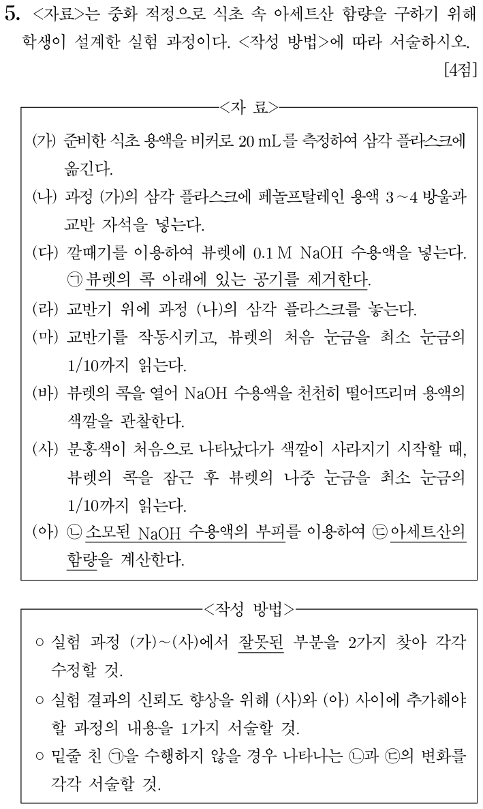
| 오류 2가지 | (가) 비커로 식초 부피를 잰다 → 부피 피펫으로 정확한 부피를 취한다. / (사) 분홍색이 나타났다가 사라지기 시작할 때 콕을 잠근다 → 분홍색이 나타나 흔들어도 (약 30초) 사라지지 않을 때(종말점) 콕을 잠근다. |
|---|---|
| 신뢰도 | 같은 과정을 3회 이상 반복하여 소모된 NaOH 수용액 부피의 평균값을 구한다. |
| ㉠ 생략 시 | 콕 아래 공기가 적정 중 빠져나가 그만큼 눈금이 더 내려간다 → ㉡ 소모된 NaOH 부피가 실제보다 크게 측정 → ㉢ 아세트산 함량이 실제보다 크게 계산된다. |
‘화학’ [12화학04-04]에서 중화 적정 실험으로 미지 시료의 농도를 구한다. 단, 적정 곡선은 ‘화학’에서 다루지 않고 ‘화학 반응의 세계’ [12반응01-03]에서 다룬다.
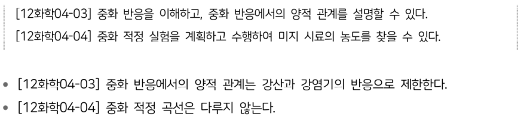
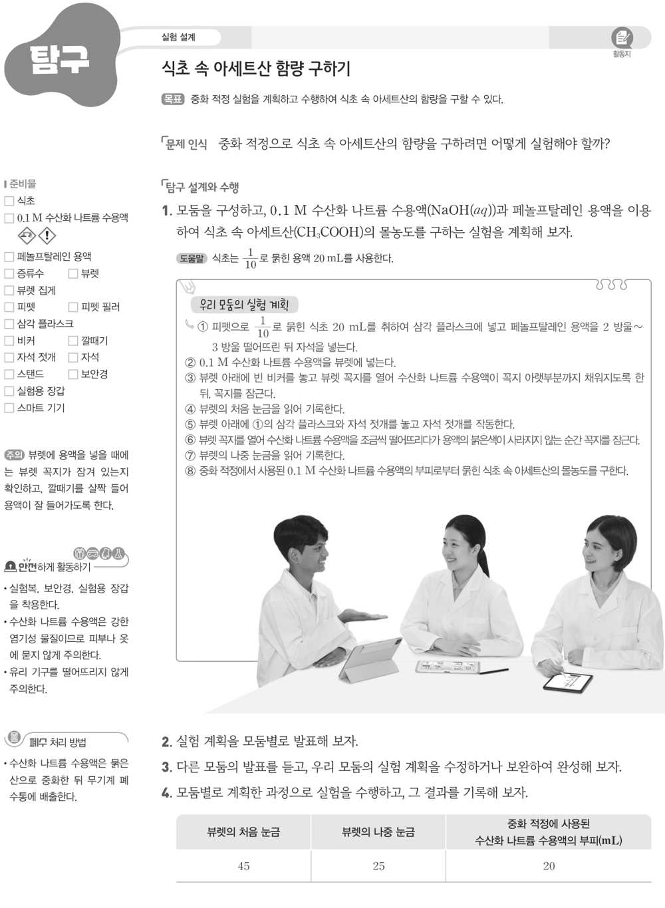
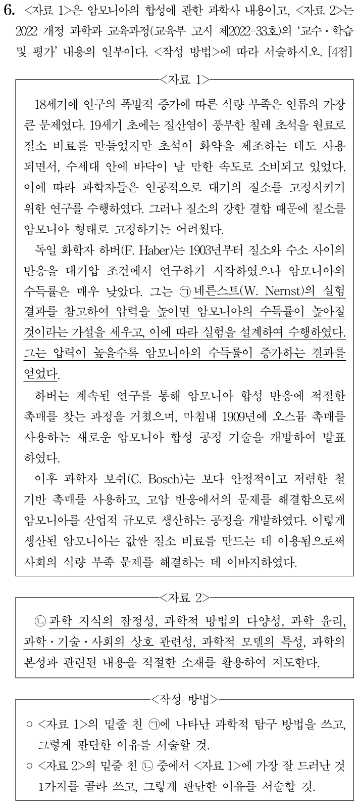
| ㉠ 탐구 방법 | 가설 연역적 탐구. 네른스트의 결과를 참고해 ‘압력을 높이면 암모니아 수득률이 높아질 것’이라는 가설을 세우고, 이를 검증하는 실험을 설계·수행하여 결과로 가설을 확인했기 때문이다. |
|---|---|
| ㉡ 본성 2가지 | ① 과학·기술·사회의 상호 관련성: 식량 부족이라는 사회 문제가 질소 고정 연구를 이끌었고, 과학 지식이 공정 기술로 이어져 다시 식량 문제를 해결했다. ② 과학적 방법의 다양성: 가설 검증 실험, 적절한 촉매를 찾는 탐색, 보쉬의 공정 개발처럼 여러 방법이 함께 쓰였다. |
<자료 2>는 교수·학습 방향 원문 그대로다. 과목마다 같은 문장이 있으므로 그대로 외워 둔다.
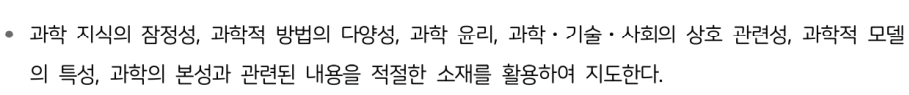
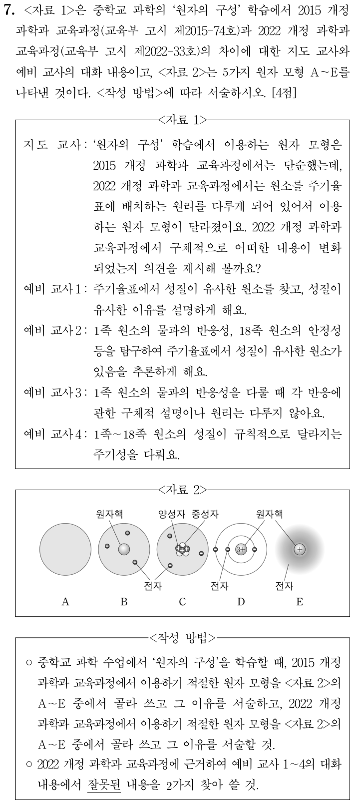
| 원자 모형 | 2015: B — 원자핵과 전자로 구성됨을 나타내는 단순한 모형으로 충분하다. / 2022: C — 원자핵 속 양성자·중성자가 나타나 있어, 양성자 수에 따라 원소가 달라지고 주기율표에 배치되는 원리([9과11-02, 03])를 다룰 수 있다. (D의 전자껍질·전자 배치는 중학교 범위 밖) |
|---|---|
| 잘못된 진술 | 예비 교사 1: 성질이 유사한 ‘이유’ 설명 — 반응의 구체적 설명이나 원리는 다루지 않는다. / 예비 교사 4: 원소의 주기성은 다루지 않는다. |
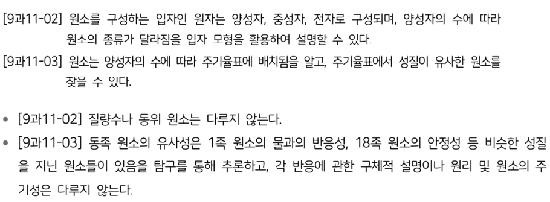
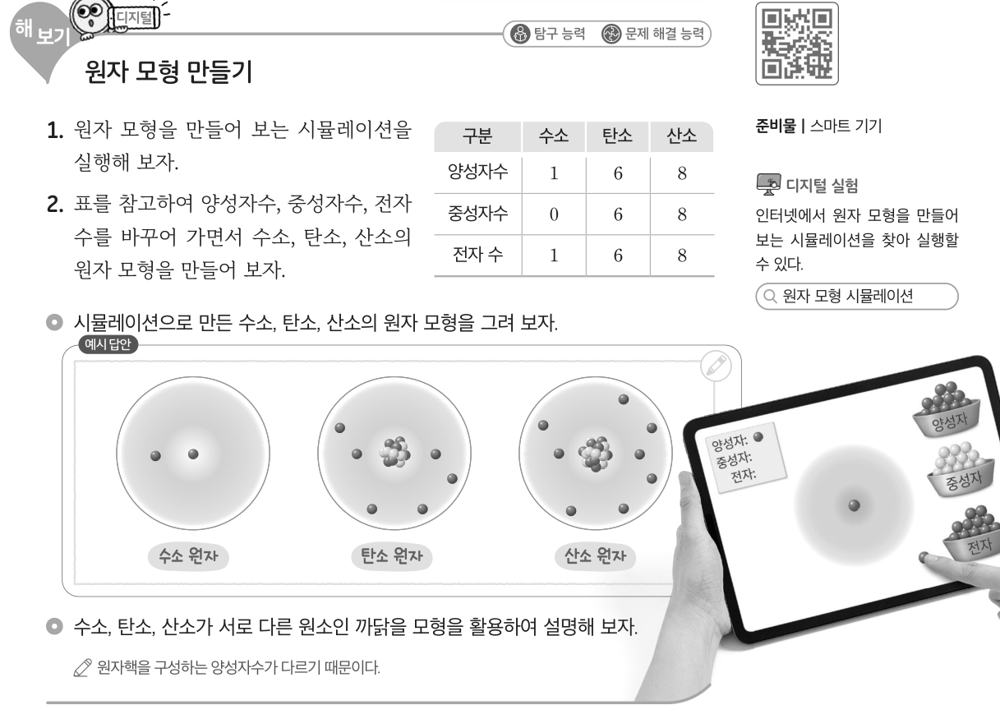
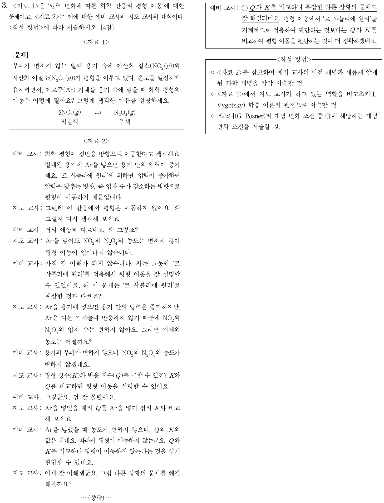
| 이전 / 새 개념 | 이전: 압력이 증가하면 르 샤틀리에 원리에 따라 기체 입자 수가 줄어드는 방향으로 평형이 이동한다(전체 압력만 보고 기계적으로 적용). / 새 개념: 반응 지수 Q와 평형 상수 K를 비교하여 판단한다. Ar을 넣어도 부피가 일정하면 NO₂, N₂O₄의 농도가 변하지 않아 Q = K이므로 평형은 이동하지 않는다. |
|---|---|
| 지도 교사 역할 | 비계 설정: 혼자서는 해결하지 못하는 문제를 질문과 단서(입자 수 → 농도 → Q·K 비교)로 단계적으로 도와, 근접 발달 영역 안에서 잠재적 발달 수준에 이르게 한다. |
| ㉠ 조건 | 유용성: 새 개념이 다른 복잡한 문제 상황도 해결할 수 있다. |
22개정 ‘화학’은 반응 지수와 평형 상수를 비교해 반응 방향을 예측한다([12화학03-03]). 압력 평형 상수는 다루지 않으므로 농도로 판단한다.
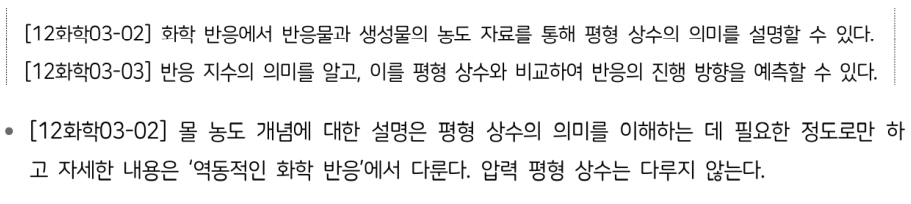
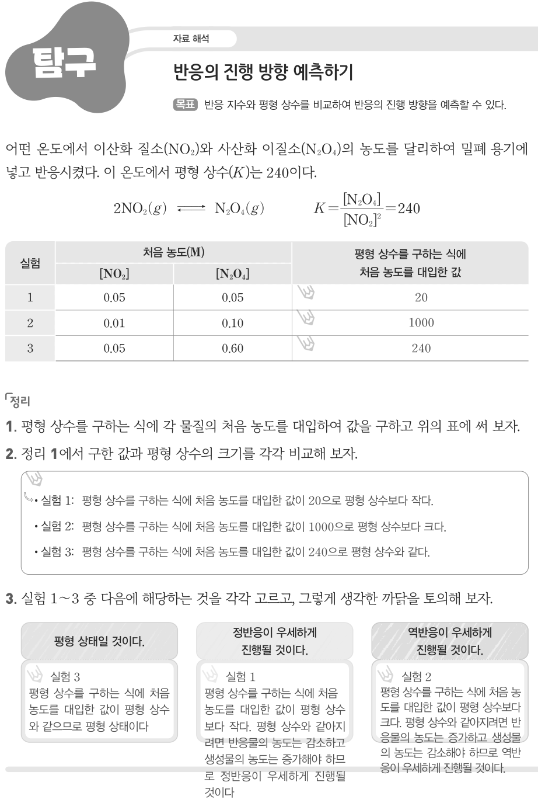
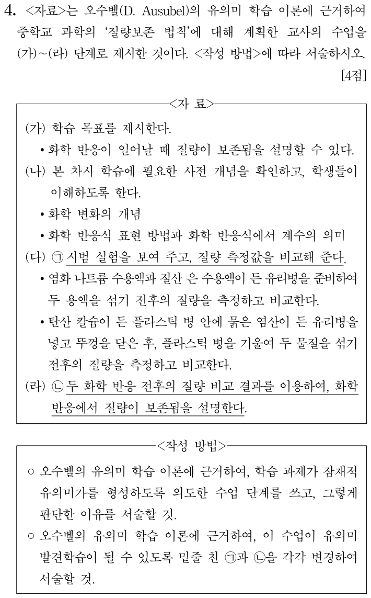
| 의도한 단계 | (나). 잠재적 유의미가는 과제의 논리적 유의미가와 함께 학습자의 인지 구조에 관련 정착 지식이 있어야 생기므로, 사전 개념(화학 변화, 화학 반응식과 계수)을 확인하고 이해시키는 (나)가 이를 의도한 단계이다. |
|---|---|
| ㉠·㉡ 변경 | ㉠ 시범 실험 대신 학생이 직접 두 반응을 실험하여 반응 전후 질량을 측정한다. ㉡ 학생이 측정 결과를 비교·분석하여 ‘반응 전후 총 질량이 같다’는 규칙을 스스로 찾아내고, 이를 사전 개념과 관련지어 설명하게 한다. |
22개정 성취기준 자체가 ‘실험을 통해 추론할 수 있다’이고, 해설은 ‘원자의 배열만 변하고 종류와 수는 변하지 않음’을 강조한다. 기체가 관여하면 부력 유의.
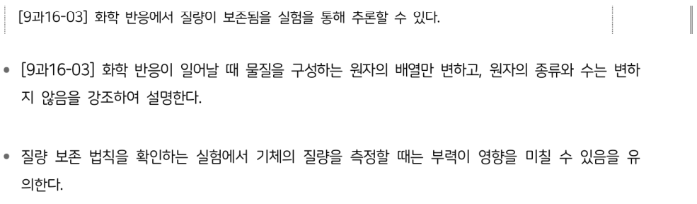
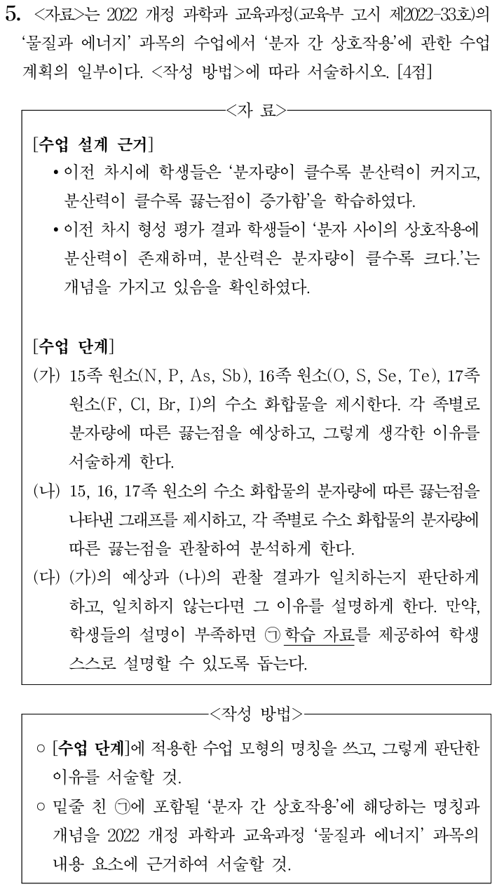
| 수업 모형 | POE(예상–관찰–설명). (가) 끓는점을 예상하고 이유를 쓰게 하고(예상), (나) 그래프를 관찰·분석하게 하며(관찰), (다) 예상과 관찰의 불일치를 설명하게 한다(설명). |
|---|---|
| ㉠ 명칭과 개념 | 수소 결합: 전기 음성도가 매우 큰 F, O, N 원자에 결합한 H 원자와 이웃 분자의 F, O, N 원자 사이에 작용하는 강한 분자 간 상호작용. 분산력보다 강해 HF, H₂O, NH₃는 분자량이 작아도 같은 족 수소 화합물 중 끓는점이 비정상적으로 높다. |
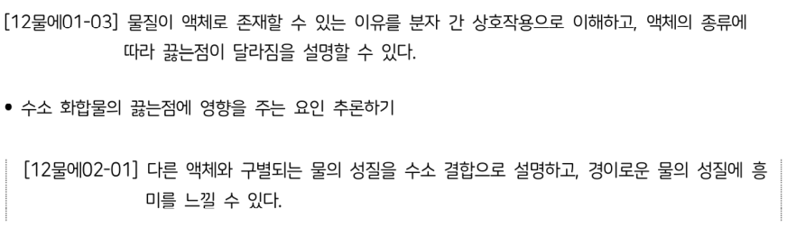
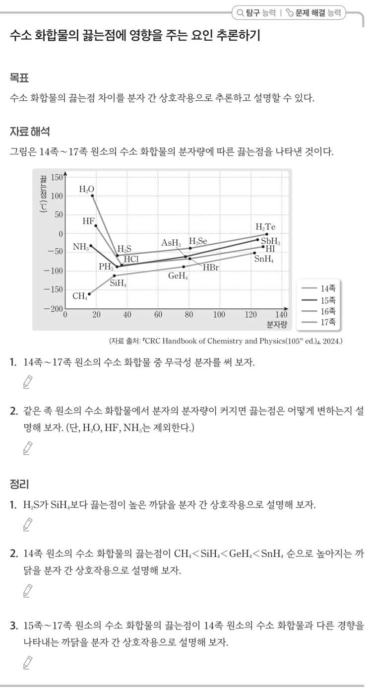
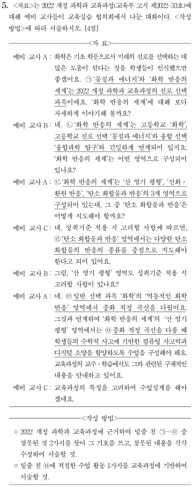
| 잘못된 것 2가지 | ㉣ → 반응의 종류를 학습하기보다 탄소 화합물의 반응을 활용하여 인간의 삶을 윤택하게 하는 화합물을 개발할 수 있다는 점을 중점으로 지도한다. / ㉤ → 일반 선택 ‘화학’에서 중화 적정 곡선은 다루지 않는다([12화학04-04] 해설). 적정 곡선은 ‘화학 반응의 세계’에서 다룬다. |
|---|---|
| ㉥ 수업 활동 | pH 센서로 중화 적정 중 pH를 실시간 측정하고, 데이터를 스프레드시트·코딩 도구로 처리하여 중화 적정 곡선을 시각화하고 해석한다(탐구 활동 ‘실험 데이터에 근거하여 중화 적정 곡선 시각화하기’). |
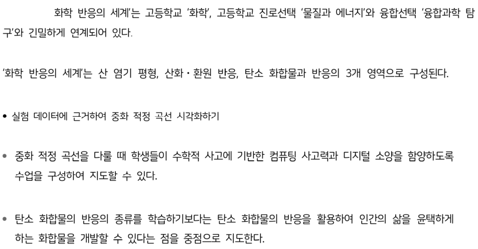
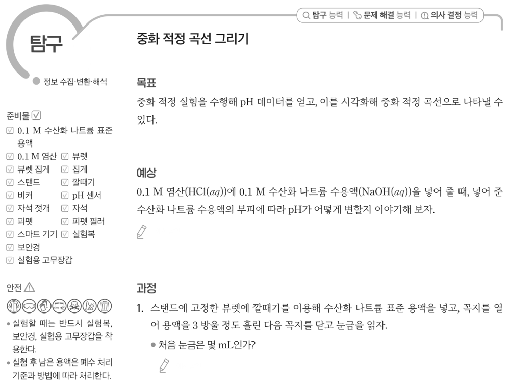
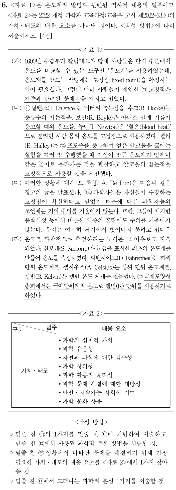
| ㉠ 문제점 | 사람마다 버터의 녹는점, 증류수의 어는점, 사람의 체온 등 서로 다른 현상을 고정점으로 삼아 공통 기준이 없었고, 버터·체온처럼 값이 일정하지 않은 현상은 재현되지 않아 온도계끼리 눈금을 비교할 수 없었다. |
|---|---|
| ㉢ 추론 | 귀납적 추론: 같은 실험을 여러 번 반복해 얻은 관찰(늘 같은 높이)로부터 ‘알코올의 끓는점은 일정하다’는 일반화를 이끌어 냈다. |
| ㉣ / ㉤ | ㉣ 과학 문제 해결에 대한 개방성. ㉤ 과학 지식은 과학자 공동체의 합의를 거쳐 정해진다. |
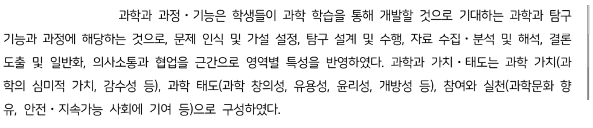
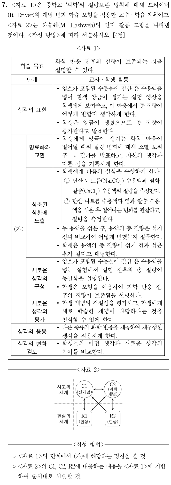
| (가) | 생각의 재구성 |
|---|---|
| C1 · C2 · R2 | C1: 앙금이 생겼으므로 반응 후 총 질량이 증가한다는 학생의 생각. / C2: 화학 반응 전후 원자의 종류와 수가 변하지 않아 총 질량이 보존된다(모형으로 설명). / R2: 탄산 나트륨 수용액과 염화 칼슘 수용액을 섞어 앙금이 생겨도 총 질량이 섞기 전과 같다는 실험 결과. |
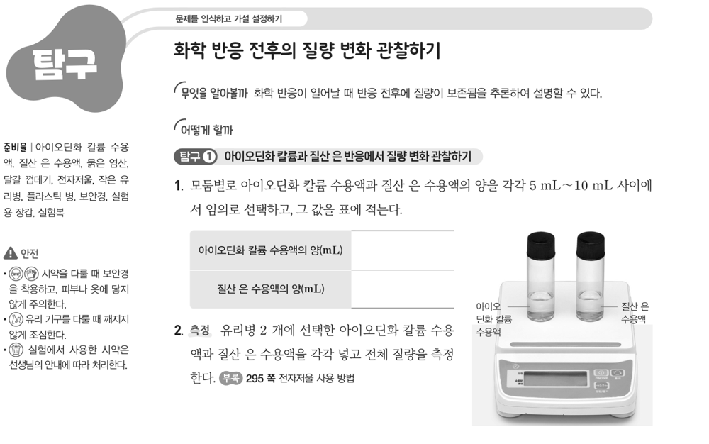
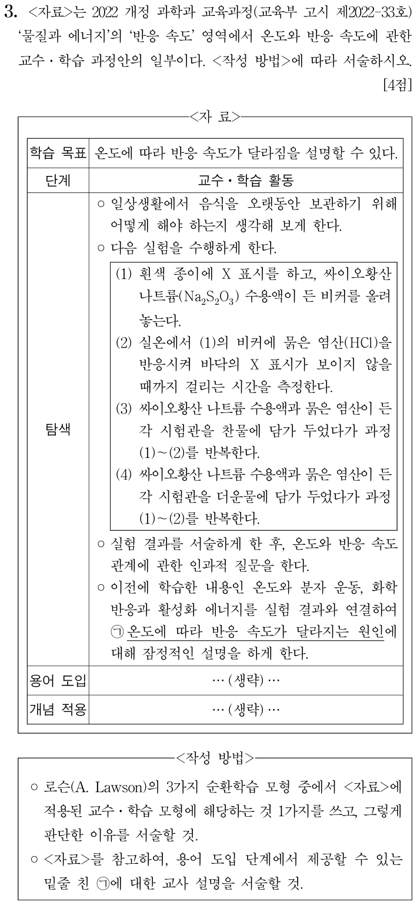
| 모형과 이유 | 경험–귀추적 순환 학습. 탐색 단계에서 실험 결과를 서술하게 한 뒤 인과적 질문을 하고, 이전에 학습한 내용(분자 운동, 활성화 에너지)을 끌어와 원인에 대한 잠정적 설명을 만들게 하기 때문이다(가설을 검증하는 실험을 학생이 설계하지는 않음). |
|---|---|
| ㉠ 교사 설명 | 온도가 높아지면 분자의 평균 운동 에너지가 커져 활성화 에너지 이상의 에너지를 가진 분자의 비율이 늘어나고, 유효 충돌 횟수가 증가하여 반응 속도가 빨라진다. |
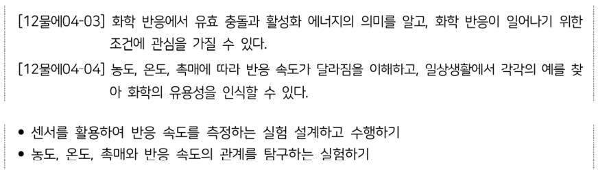
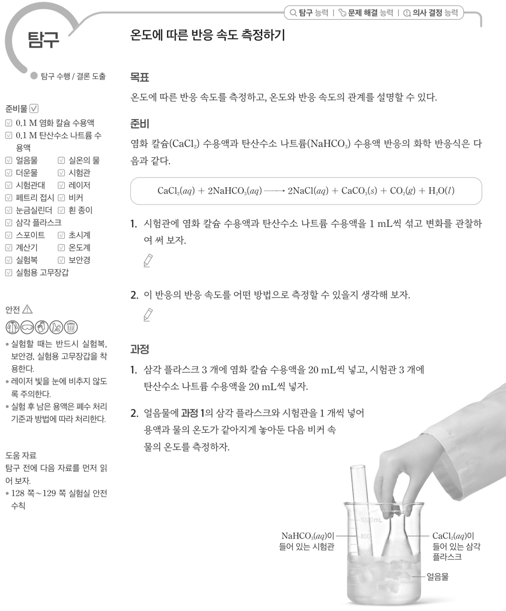
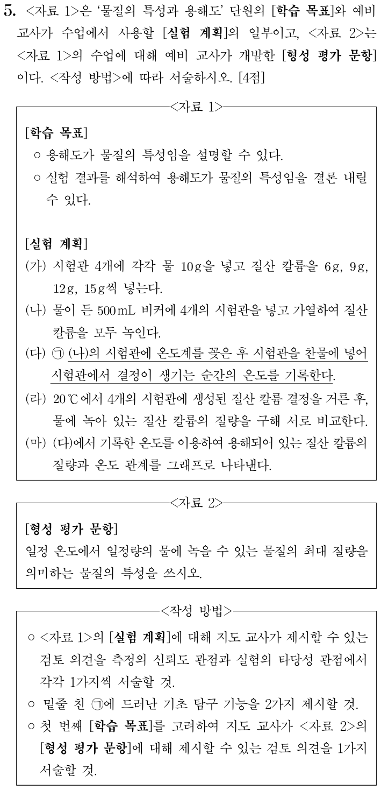
| 신뢰도 / 타당도 | 신뢰도: 결정이 생기는 순간의 온도를 한 번만 잰다 → 시험관마다 반복 측정하여 평균값을 쓴다. / 타당도: 질산 칼륨 한 가지 물질만 써서는 ‘용해도가 물질의 특성’이라는 결론을 내릴 수 없다 → 다른 물질의 용해도와 비교하는 실험을 추가한다. |
|---|---|
| ㉠ 기초 탐구 | 관찰(결정이 생기는 순간 확인), 측정(온도계로 온도 읽기) |
| 형성 평가 | 학습 목표는 ‘용해도가 물질의 특성임을 설명’인데 문항은 용해도의 정의(용어)만 묻는 회상형이라 목표와 일치하지 않는다 → ‘용해도가 물질의 특성인 이유를 설명하시오’처럼 목표 수준에 맞게 고친다. |
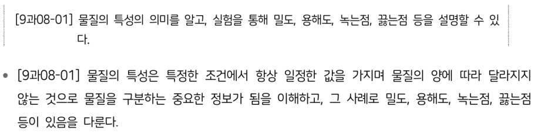
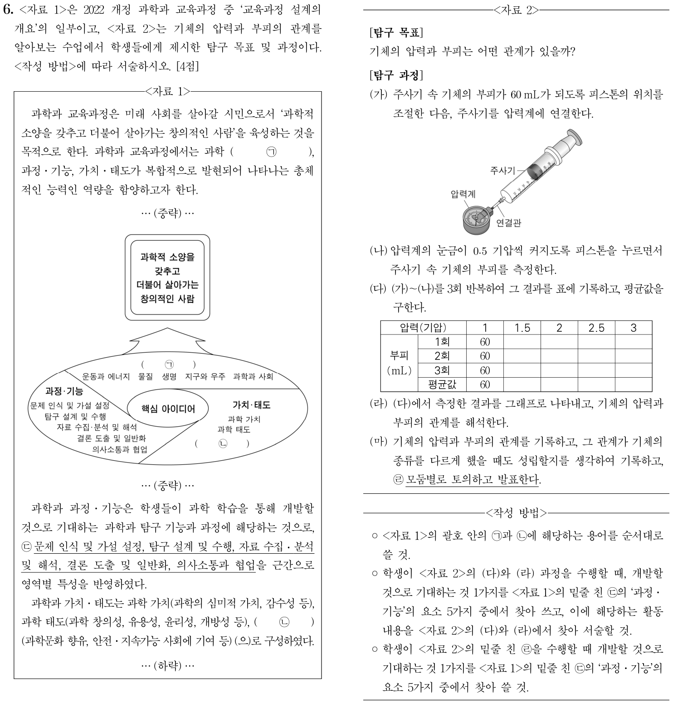
| ㉠ · ㉡ | ㉠ 지식·이해, ㉡ 참여와 실천 |
|---|---|
| (다)·(라) | 자료 수집·분석 및 해석 — (다) 3회 반복 측정하여 표에 기록하고 평균값을 구한다. (라) 결과를 그래프로 나타내고 압력과 부피의 관계를 해석한다. |
| ㉣ | 의사소통과 협업 |
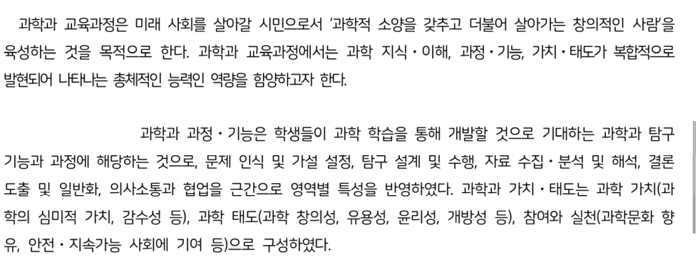
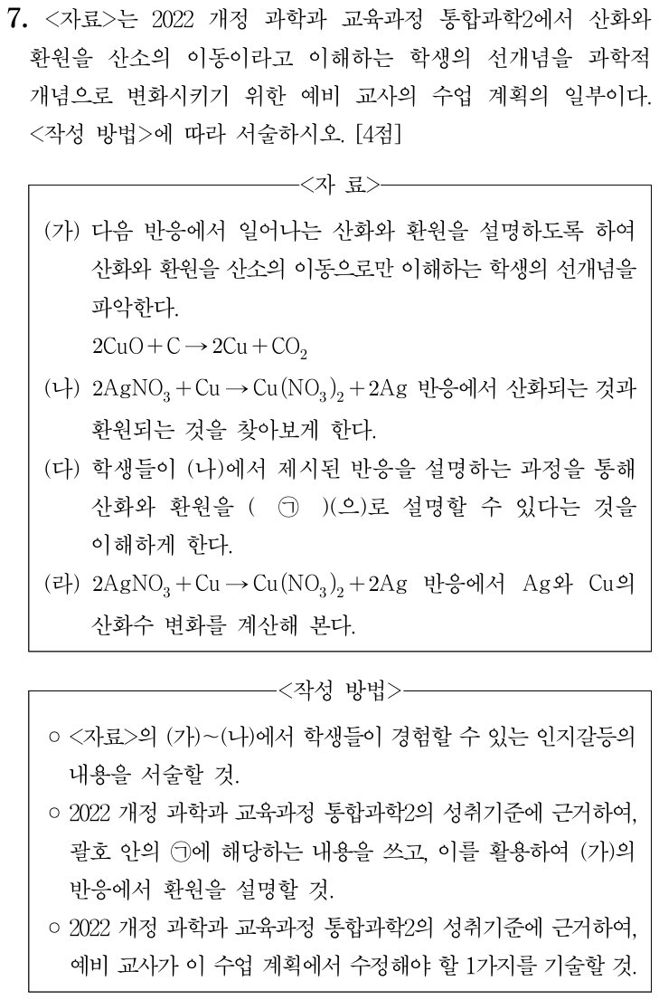
| 인지 갈등 | (가)는 산소의 이동으로 산화·환원을 설명할 수 있지만, (나)는 산소가 이동하지 않는데도 Cu가 Cu²⁺로, Ag⁺가 Ag로 변해 산소 이동만으로는 설명할 수 없다는 갈등. |
|---|---|
| ㉠과 (가) | ㉠ 전자의 이동. (가)에서 산화 구리(Ⅱ) 속 구리 이온(Cu²⁺)이 전자를 얻어 구리(Cu)가 되므로 산화 구리(Ⅱ)가 환원된다. |
| 수정할 것 | (라)의 산화수 변화 계산은 통합과학2에서 다루지 않으므로([10통과2-01-03] 해설) 삭제하거나, Cu는 전자를 잃고 Ag⁺는 전자를 얻는 전자의 이동으로 설명하는 활동으로 바꾼다. |
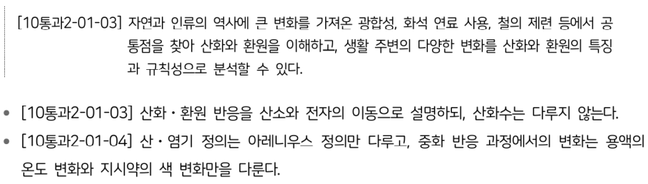
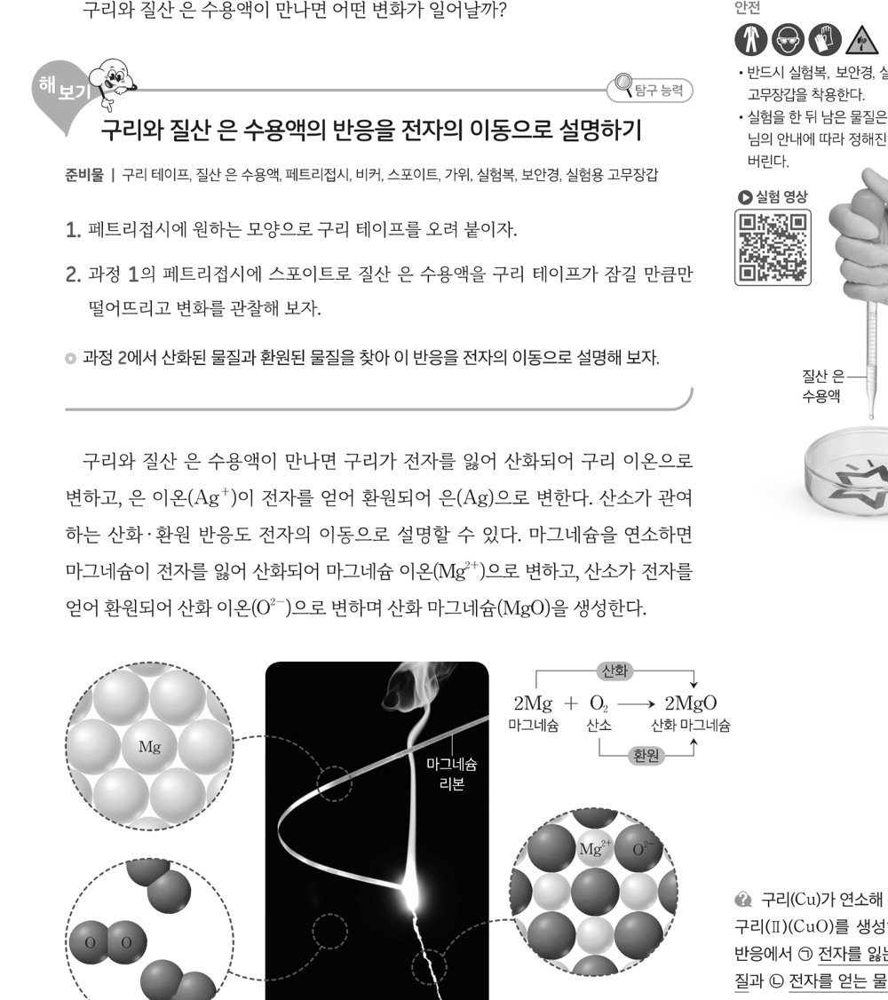
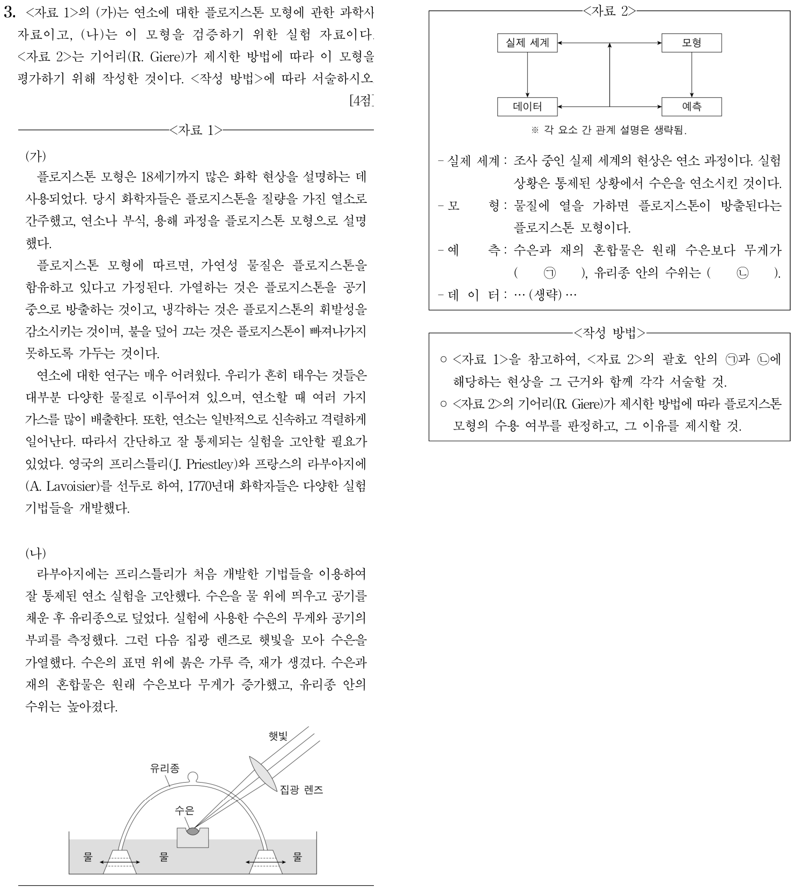
| ㉠ · ㉡ | ㉠ 감소한다: 모형에서 가열은 질량을 가진 플로지스톤을 공기 중으로 내보내는 것이므로 남은 수은과 재는 그만큼 가벼워진다. ㉡ 낮아진다(높아지지 않는다): 빠져나온 플로지스톤이 유리종 안 공기에 더해져 기체가 수면을 밀어낸다. |
|---|---|
| 수용 여부 | 수용할 수 없다(기각). 모형의 예측(무게 감소, 수위 하강)이 데이터(무게 증가, 수위 상승)와 일치하지 않으므로 모형이 실제 세계에 들어맞지 않는다. |
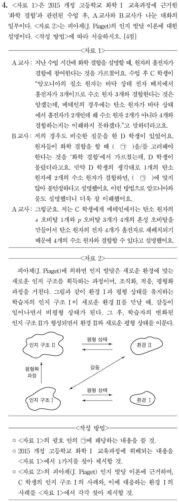
| ㉠ | 옥텟 규칙(팔전자 규칙) |
|---|---|
| 위배 내용 | A 교사가 메테인의 결합을 혼성 오비탈(s 1개 + p 3개 → 혼성 오비탈 4개)로 설명한 것. 혼성 오비탈은 고등학교에서 다루지 않는다. |
| 인지 구조 Ⅰ / 환경 Ⅰ | 인지 구조 Ⅰ: ‘원자는 바닥 상태의 홀전자 수만큼 결합한다’는 C 학생의 생각. / 환경 Ⅰ: 홀전자 3개인 질소가 수소 3개와 결합하는 암모니아(환경 Ⅱ = 메테인). |
2022 ‘화학’은 루이스 전자점식과 전자쌍 반발 이론으로 분자 구조를 추론하며, 중심 원자는 2·3주기 전형 원소 중 Be, B와 옥텟 규칙을 따르는 경우로 한정한다.
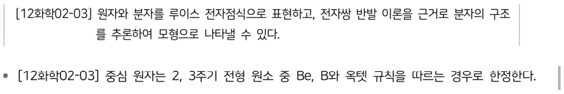
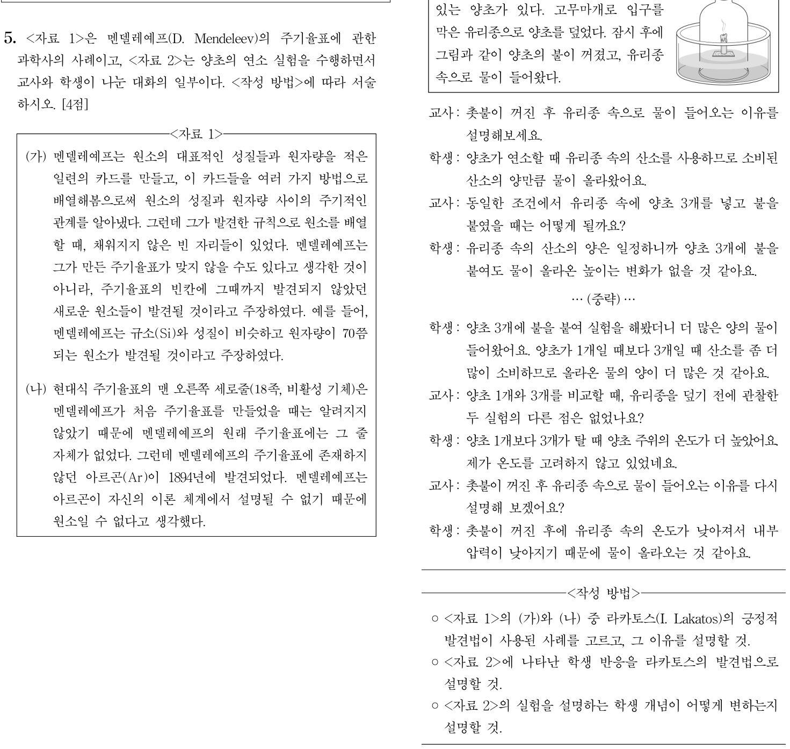
| 긍정적 발견법 | (가). 규칙에 맞지 않는 빈자리(변칙 사례)가 생겼을 때 주기율표가 틀렸다고 보지 않고, ‘아직 발견되지 않은 원소가 있다’는 보호대를 보완하여 새 원소의 존재와 성질을 예측했기 때문이다. ((나)는 아르곤을 원소가 아니라고 하여 핵을 지키기만 한 경우) |
|---|---|
| 학생 반응 | 긍정적 발견법: 예상과 다른 결과(변칙 사례)가 나와도 ‘산소를 소비해서 물이 올라온다’는 견고한 핵은 지키면서, 산소의 양 → 온도와 내부 압력처럼 보호대를 수정·보완하여 현상을 설명해 나갔다. |
| 개념 변화 | ‘소비된 산소의 양만큼 물이 들어온다’ → ‘촛불이 꺼진 뒤 유리종 안 기체의 온도가 낮아져 내부 압력이 감소하므로 물이 들어온다’. |
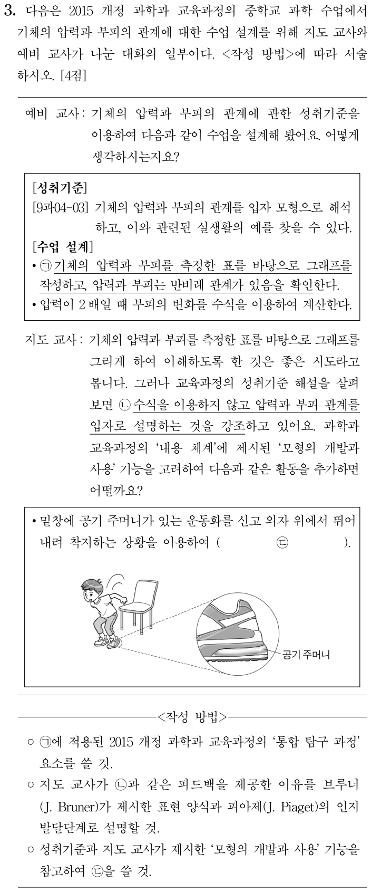
| ㉠ | 자료 해석(표 → 그래프로 나타내 반비례 관계를 찾음). 2022 기준으로는 과정·기능 ‘자료 수집·분석 및 해석’. |
|---|---|
| ㉡ 이유 | 수식은 상징적 표상인데, 중학생 상당수는 구체적 조작기(형식적 조작기로 넘어가는 과도기)에 있어 비례 관계를 수식으로 다루는 추상적 사고가 어렵다. 입자 모형 그림 같은 영상적 표상으로 설명하는 것이 학생 수준에 맞다. |
| ㉢ | 착지할 때 공기 주머니 속 기체 입자의 모습을 입자 모형으로 그려 보고, 외부 압력이 커지면 부피가 줄어 입자가 벽에 충돌하는 횟수가 증가하여 압력이 커짐을 설명하게 한다. |
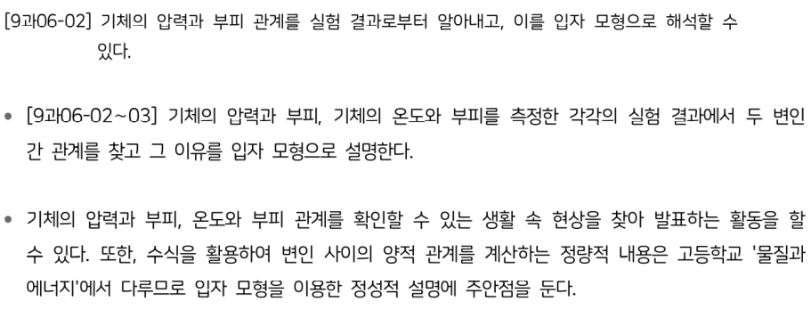
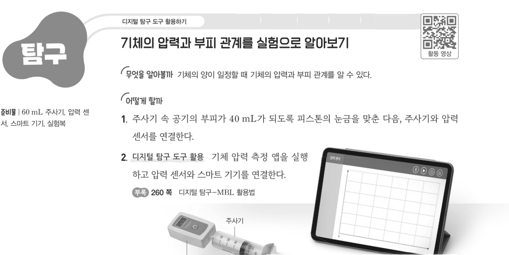
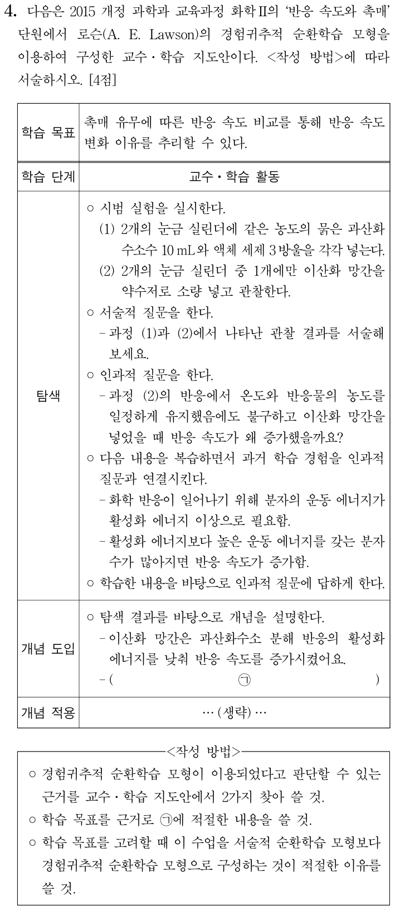
| 근거 2가지 | ① 서술적 질문 다음에 인과적 질문(왜 반응 속도가 증가했을까?)을 제시한다. ② 과거 학습 경험(활성화 에너지, 분자의 운동 에너지)을 인과적 질문과 연결하여 원인을 설명하게 한다(귀추). |
|---|---|
| ㉠ | 활성화 에너지가 낮아지면 활성화 에너지 이상의 에너지를 가진 분자 수가 많아져 반응 속도가 증가한다. |
| 이유 | 학습 목표가 반응 속도 변화의 이유를 추리하는 것이므로, 관찰 서술·규칙 발견에 그치는 서술적 순환 학습보다 인과적 질문에 대한 설명을 생성하는 경험–귀추적 순환 학습이 적절하다. |
2015 화학Ⅱ ‘반응 속도와 촉매’는 2022에서 진로 선택 ‘물질과 에너지’ 반응 속도 영역으로 옮겨졌다.
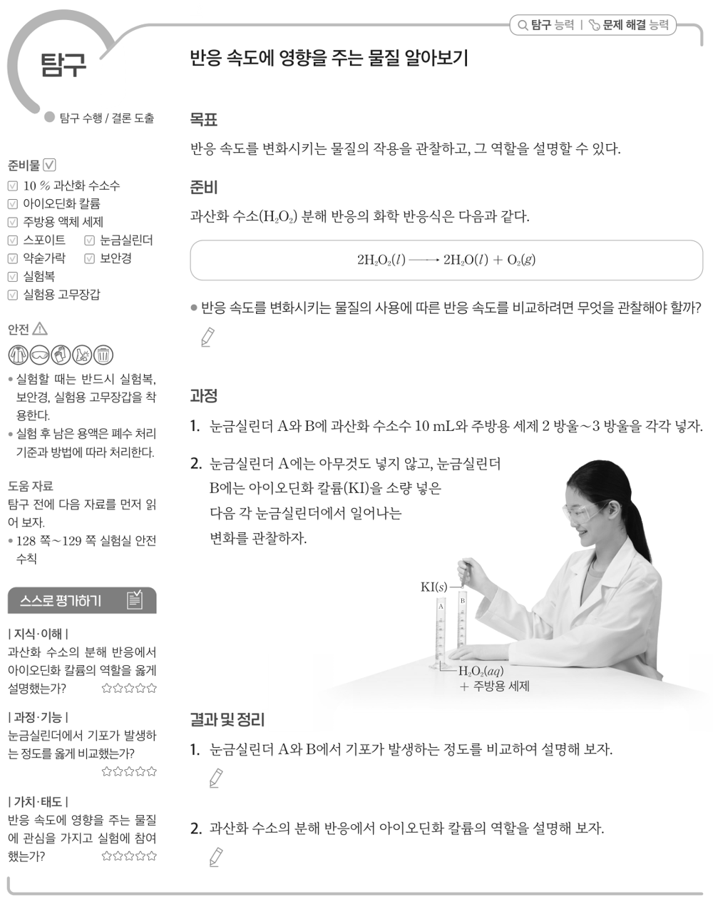
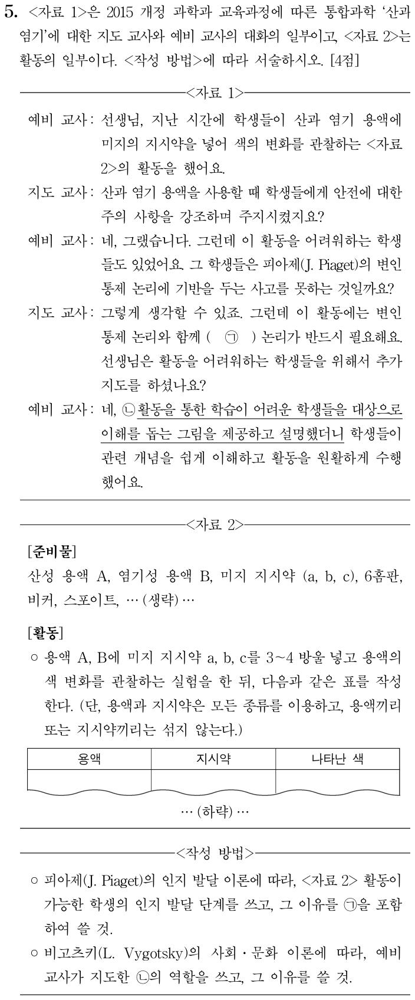
| 발달 단계 | 형식적 조작기. 산성·염기성 용액 2가지와 지시약 3가지를 빠짐없이 모두 짝지어 실험·기록해야 하므로 변인 통제 논리와 함께 ㉠ 조합적 논리가 필요하다. |
|---|---|
| ㉡ 역할 | 비계 설정: 혼자서는 활동을 해내기 어려운 학생(실제적 발달 수준)에게 그림 자료라는 도움을 주어, 근접 발달 영역 안에서 잠재적 발달 수준에 이르게 했다. |
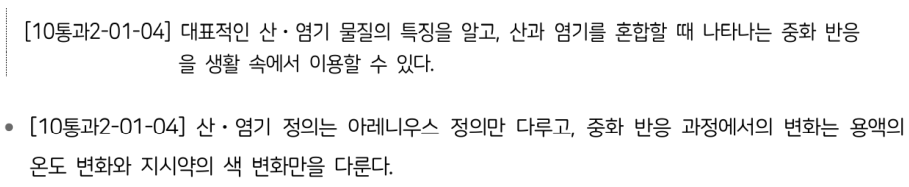
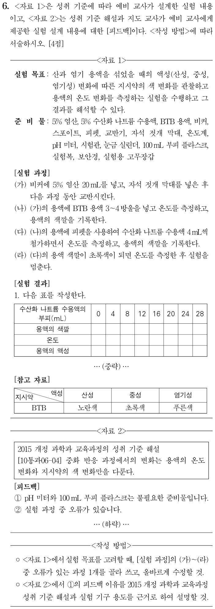
| 오류 수정 | (라) 초록색(중성)이 되면 멈추면 염기성으로의 변화를 관찰할 수 없다 → (다)의 용액 색깔이 푸른색(염기성)이 될 때까지 온도를 측정한 후 실험을 멈춘다. |
|---|---|
| ① 이유 | 성취기준 해설에서 중화 반응 과정의 변화는 온도 변화와 지시약의 색 변화만 다루므로 pH 미터는 필요 없고, 부피 플라스크는 정확한 농도의 표준 용액을 만들 때 쓰는 기구인데 이미 5% 용액이 주어져 있어 필요 없다. |
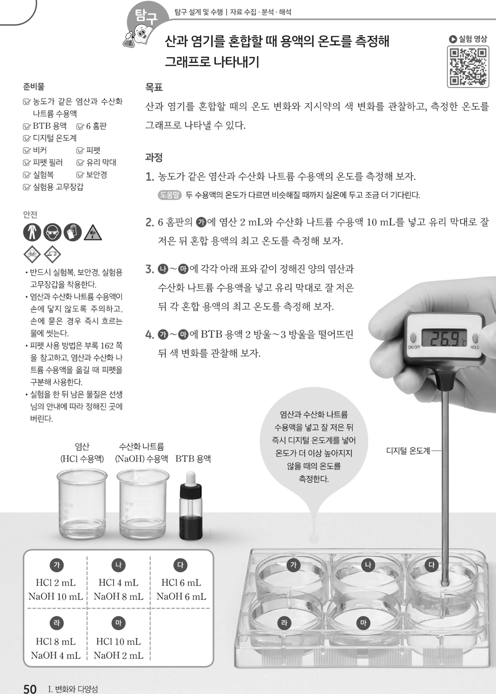